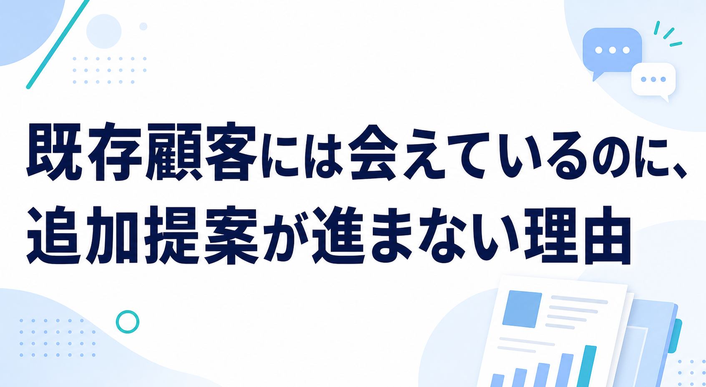
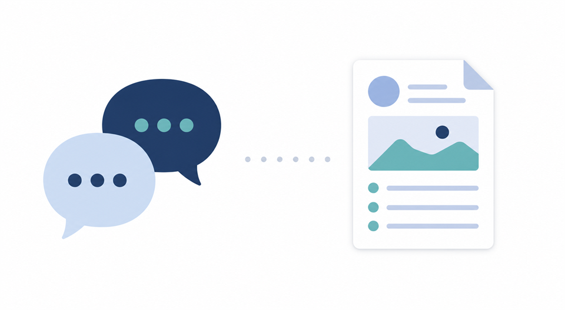
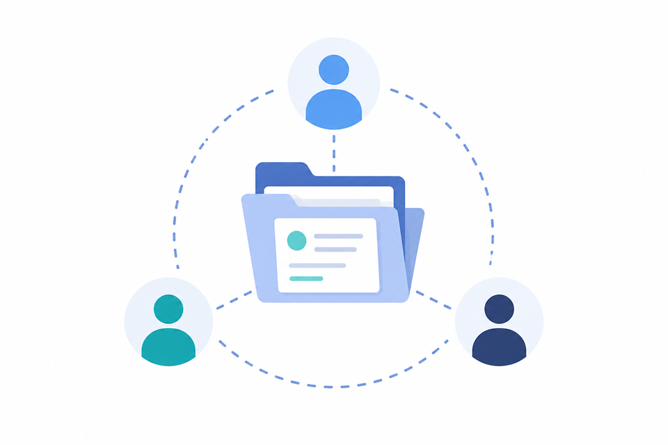

みなさんこんにちは、Valorize AIの斎藤です。
既存顧客には定期的に会えている。関係も悪くない。相談を受けることもある。
それなのに、追加提案や別部署への横展開がなかなか増えない。そんな違和感を持っている営業責任者の方は少なくないと思います。
この状態になると、「もっと提案力を上げないといけない」「もっと訪問回数を増やすべきだ」と考えたくなります。もちろん、提案力や接点量は大切です。ただ、私はそれだけで見ると、問題の中心を少し外してしまうことがあると感じています。
既存顧客への追加提案が進まない本質は、関係性や訪問回数の不足だけではありません。接点で拾った顧客の変化を、次の提案材料として残せているかどうかにあります。
今回は、既存顧客とは会えているのに追加提案が進まない理由を、「提案材料が残っているか」という観点から整理してみます。
既存顧客に会えていることと、提案材料があることは違う
既存顧客との関係が良いことは、とても大きな資産です。新規顧客と比べれば、相手の事業や担当者の考え方を知っていて、会話の土台もあります。
ただし、関係が良いことと、次の提案材料があることは同じではありません。
定期訪問で近況を聞く。困っていることがないか確認する。雑談の中で最近の動きを聞く。こうした接点は、関係維持には役立ちます。一方で、その場で出てきた小さな変化が、次回の会話や提案につながる形で残らなければ、追加提案には進みにくくなります。

たとえば、顧客が「最近、問い合わせ対応が増えていて」と話したとします。その場では軽い雑談として流れても、実は業務負荷の変化かもしれません。別の部署で新しい課題が出ている兆しに近い場合もあります。
しかし、その変化が担当者の記憶にだけ残り、次に何を確認するか、誰に相談するか、どの提案につなげるかまで整理されなければ、商談の入口にはなりません。
EmpowerXが公表した既存顧客の商談化に関する調査では、BtoB SaaS、受託、SIなどに勤務する人を対象に、既存顧客から追加ニーズを把握しても最終的に提案まで至らなかった経験がある回答が半数程度あったとされています。
https://prtimes.jp/main/html/rd/p/000000041.000126301.html
この調査対象をすべてのBtoB企業へそのまま広げて言うことはできません。それでも、「既存顧客からニーズらしきものは見えているのに、提案に変わらない」という問題が現場で起きていることは読み取れます。
追加提案が増えないときに最初に見るべきなのは、会えているかどうかだけではありません。その接点から、次の提案材料が残っているかどうかです。
追加ニーズは拾えても、誰が追うのかが曖昧だと止まる
追加提案が止まる理由は、ニーズがまったく存在しないからだけではありません。
むしろ、現場では「何となく可能性はありそう」「別部署にも話せるかもしれない」「次の更新時に相談できるかもしれない」という兆しは出ていることがあります。
問題は、その兆しを誰が追うのかが曖昧なままになりやすいことです。
既存担当者は、日々の対応や新しい案件で忙しい。新規獲得を優先しなければならない時期もあります。カスタマーサクセスやサポートに近い役割の人が接点を持っていても、営業提案までつなぐ責任範囲が明確でないこともあります。
この状態では、追加ニーズの兆しが出ても、「誰かがいつか拾うもの」になってしまいます。
先ほどの調査でも、追加ニーズが商談化しない背景として、兆しを拾って追うリソース不足、新規獲得優先、顧客接点の属人化、役割の曖昧さが挙げられています。
これは営業担当者だけの努力不足ではありません。少人数の営業組織ほど、目の前の新規商談や既存対応を優先せざるを得ない場面は自然にあります。
だからこそ、追加提案を「気づいた人が頑張るもの」にしておくと、どうしても抜け漏れが起きます。顧客の変化を見つけたあとに、誰が次の会話へ進めるのか。どのタイミングで営業の論点に戻すのか。ここが曖昧なままだと、関係が良くても提案は止まります。
追加提案が止まる会社では、ニーズの有無よりも、ニーズらしき変化を誰が次の会話へ進めるのかが曖昧になっていることがあります。
深耕営業が属人化すると、顧客の変化は記憶の中で消えていく
既存顧客への深耕営業は、どうしても担当者の経験に依存しやすい領域です。
長く担当している営業ほど、顧客の社内事情や担当者の癖、過去のやり取りをよく覚えています。これは強みです。特に中小企業の営業では、担当者の肌感覚が顧客理解を支えている場面も多いはずです。
ただ、その強みが担当者の頭の中に閉じてしまうと、組織としては追加提案を再現しにくくなります。

「この会社は最近、現場が忙しそう」
「あの部署は以前から少し不満を持っていそう」
「次の更新前に、この論点を確認した方がよさそう」
こうした情報は、単なるメモ以上の意味を持ちます。次の会話を作る提案材料です。
ところが、会話の背景や温度感が共有されていないと、他のメンバーはその情報を使えません。担当者が異動したり、忙しくなったりすると、顧客の変化は記憶の中で薄れていきます。
BtoB企業のマーケティング課題を扱ったナイルの調査では、BtoB企業の課題として「商談化〜受注」や「顧客理解の不足」が上位に挙がっています。
https://prtimes.jp/main/html/rd/p/000000602.000055900.html
この調査は既存顧客深耕に限定したものではありません。ただ、顧客理解や受注までの導線設計がBtoBの課題になりやすいことは、既存顧客営業にも通じる論点です。
既存顧客の場合、「もう知っている顧客だから大丈夫」と思いやすいぶん、変化の記録が粗くなることがあります。しかし、顧客の事業状況、担当者の関心、社内の優先順位は変わります。過去の関係性だけでは、今の提案材料にはなりません。
深耕営業を再現性ある活動にするには、担当者の頭の中にある顧客文脈を、次の会話に使える形で残す必要があります。
見直すべきは、接点後に次の会話が残っているか
では、既存顧客への追加提案を増やすために、まず何を見るべきでしょうか。
私は、訪問回数や面談頻度だけを見るよりも、接点のあとに「次の会話」が残っているかを見ることが大切だと考えています。
たとえば、定期訪問のあとに次のようなことが残っているでしょうか。
- 顧客側で最近変わった業務や体制
- 担当者が気にしていた課題や違和感
- 次回確認すべき部署や関係者
- 提案につながるかもしれない小さな兆し
- 誰が、いつ、その論点を次に扱うのか
これは細かいチェックリストを増やすという話ではありません。既存顧客との接点を、単なる関係維持で終わらせないための見方です。
「何かお困りごとはありませんか」と聞くだけでは、顧客も相談しにくいことがあります。顧客自身も、まだ課題として言語化できていない場合があるからです。
そのときに営業側が見るべきなのは、明確なニーズだけではありません。前回と比べた変化、発言の温度感、社内で起きていそうな動き、次回もう少し深掘りすべき論点です。
既存顧客営業を関係維持で終わらせないためには、接点で拾った変化を提案材料として残し、担当者以外も扱える状態にしていく必要があります。
AIやツールは、この文脈では主役ではありません。ただ、顧客接点の整理、次回提案の文脈づくり、担当者以外も状況を把握できる状態づくりの負荷を下げる手段にはなります。
大事なのは、「AIを使うかどうか」ではなく、接点で拾った顧客の変化が次の提案材料として残っているかです。
既存顧客への追加提案を増やす出発点は、接点を増やすことだけではありません。接点のあとに、次の会話の論点を残せているかを見直すことです。
もし、自社の既存顧客営業でも「関係はあるのに追加提案が増えない」と感じている場合は、まず顧客接点から何を提案材料として残すべきかを整理するところからご相談いただけます。